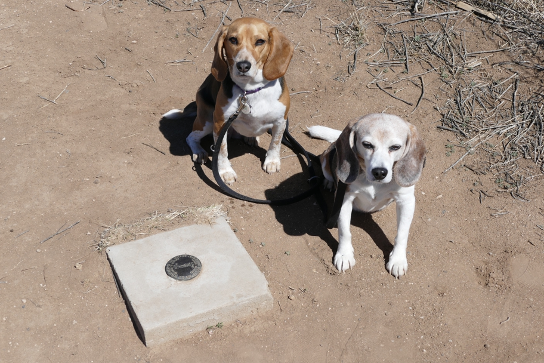

Between Dodge City and Santa Fe we again drove through four states in less than an hour (at Western driving speed), not counting our stops in Keyes and here. We only grazed Texas at its northwestern corner, marked by this survey monument. A geocache hung from the nearby barbed wire fence. The dogs are sitting in Texas, to the southeast of the monument. New Mexico is in the other three quadrants. But what of Oklahoma? We had crossed from Oklahoma into New Mexico about two miles before, thanks to a colossal surveying error which placed the western border of northern Texas a mile and a half west of the western border of Oklahoma and the 103rd parallel where it was intended to be. There's another monument where Oklahoma, Texas and New Mexico meet, a mile and a half to the east down State Line Road, but I'd had enough of unpaved roads in Kansas.
Halley Beagle Texas Texline Wallace Beagle